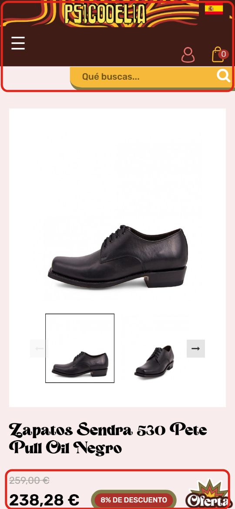
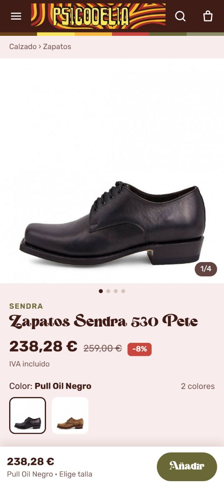
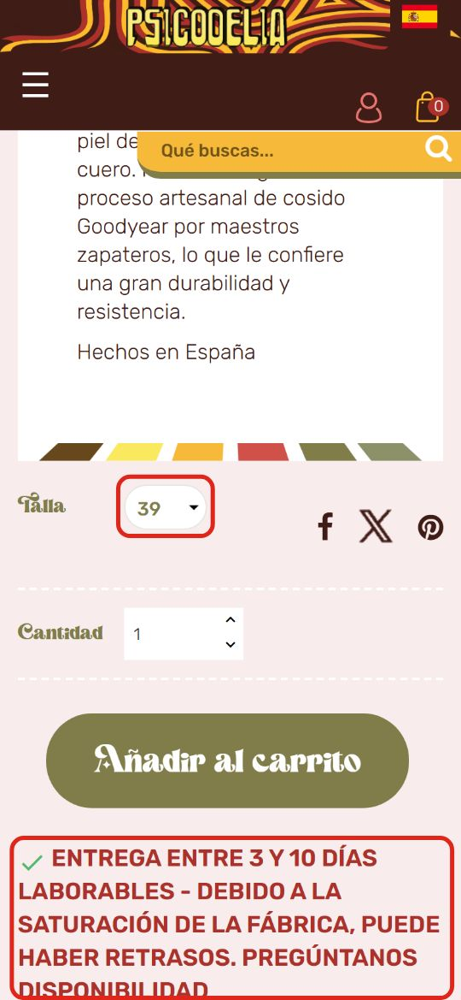
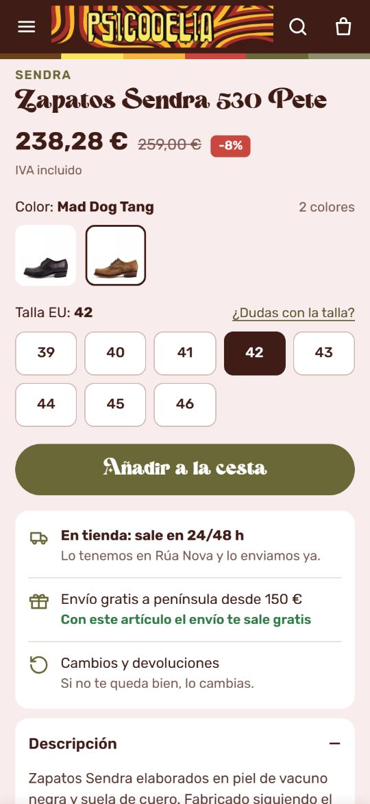
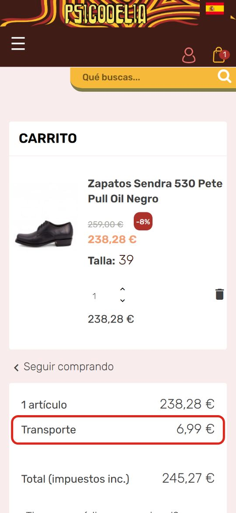
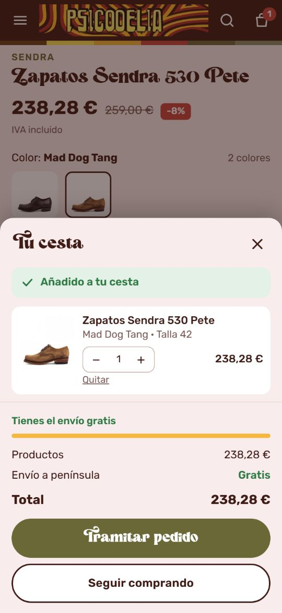

Tres mejoras para la ficha y la compra desde el móvil
El 9 de octubre hicimos una compra de prueba en vuestra tienda con un móvil normal, con los Zapatos Sendra 530 Pete. Estas son las tres cosas que cambiaríamos. En cada una tenéis cómo se ve hoy y cómo quedaría.
Probar el ejemploEl botón de compra siempre a mano
Hoy. La cabecera y el buscador ocupan un tercio de la pantalla y no se mueven al bajar. En la primera vista solo caben la foto y el nombre; el precio asoma por abajo. Para llegar a «Añadir al carrito» hay que bajar casi dos pantallas.
Propuesta. Cabecera fina con la lupa en un icono, precio y opciones justo debajo de la foto y una barra fija abajo con el precio y el botón «Añadir».


Colores, tallas y plazo claros
Hoy. Cada color es un producto aparte. El 530 Pete negro y el Mad Dog Tang no se enlazan entre sí, y lo mismo pasa con otros Sendra (4133 Cuervo, 3241 Cuervo Flora, 3565 Steel) y con prendas como la camisa Malina o el chaleco King. La talla sale con el 39 ya marcado: si el cliente no lo cambia, se lleva un 39. Y el plazo de entrega va debajo del botón, en rojo y en mayúsculas, hablando de la saturación de la fábrica.
Propuesta. Miniaturas para cambiar de color sin salir de la ficha y tallas en botones sin ninguna marcada; si no eliges, te lo pide. Al lado, un enlace «¿Dudas con la talla?» que abre vuestro WhatsApp. El plazo va junto al botón y en tono normal, separando lo que tenéis en tienda (24/48 h) de lo que pedís a fábrica.


Una cesta que confirma y un pedido más corto
Hoy. Al pulsar «Añadir al carrito» no aparece ningún aviso; solo cambia el número del icono. En el carrito, un pedido de 238 € muestra «Transporte 6,99 €» aunque la web anuncia envío gratis desde 150 €. Aunque luego se descuente, ese cargo aparece justo antes de pagar. El pedido tiene cuatro pasos y el primero pide tratamiento (Sr./Sra.), contraseña y dos casillas de privacidad.
Propuesta. Al añadir se abre la cesta con el producto, lo que falta para el envío gratis y el total real. El pedido cabe en una página con datos, dirección y pago, sin crear cuenta y con una sola casilla.


Cómo se haría
- Sobre vuestra PrestaShop actual, con el mismo dominio, los mismos productos y los mismos pagos (Redsys y PayPal). No hay que cambiar de plataforma.
- El ejemplo está hecho con vuestras fotos, precios y textos. La cesta y el pedido son de prueba y no cobran nada.
- Si os encaja, os pasamos presupuesto cerrado con plazos.